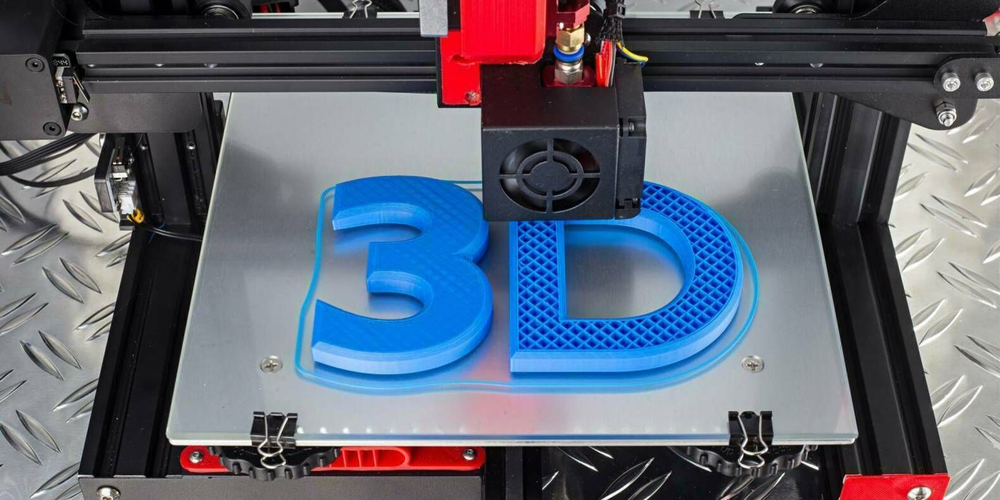

3-D Печать
На первый взгляд может показаться, что это не может быть интересно. Отправил файл на 3D принтер и ждешь завершения! Однако это не так. После правильной настройки принтера, что тоже не так-то легко сделать, начинается процес разработки модели которую ты хочешь воссоздать. Для меня весь процес от создания модели до ее воплощения в пластике невероятно интересен. В этом хобби совмещается и творчество(можно смоделировать все что придет тебе в голову) и техника, ведь чтобы твою модель получилось напечатать, необходимо просчитать оптимальную прочность, толщину стенок, температуру с которой производить печать, хватит ли в катушке пластико, для полной реализации задуманного. Для краткой информации достаточно, если я вас заинтересовал можете ознакомится с моим опытом